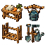
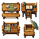
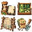
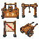
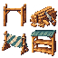
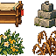
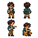

A LITTLE WORLD, TILE BY TILE
32픽셀로 만드는
우리 도시의 풍경
잔디와 흙길, 물가와 작은 가게. 같은 규격의 타일 64종을 이어 붙인 첫 시안입니다.
아트 샘플 지도입니다. 현재 주민·재고·프로젝트를 재현한 실제 세계 화면은 아닙니다.
타일을 이어 만든 마을
가로·세로로 밀어 구경하세요. 24×18칸 · 지형과 시설 2개 레이어
64종 타일 도감
타일을 누르면 번호와 이름을 확인할 수 있습니다. 실제 한 칸은 32×32픽셀입니다.
작업 도구 · 4종 추가

게임 연결: 운반 도구와 보류된 선반 골조. 작업대·정원 도구는 자산 준비 단계.
가구 4종 추가

식탁·책상·벤치는 기존 시설 표현으로 게임 연결. 빈 벌통은 자산만 준비, 실제 벌·꿀 생산 없음.
측정·보관 도구4종

장부 표지와 기존 건조 자리 게임 연결. 선별판·씨앗 도구는 자산만 준비.
중계·운반4종

기존 발판 표시와 경사 금지 표지는 게임 연결. 받침대·손수레는 자산만 준비.
공사 상태4종

골조·공사 차단 게임 연결. 목재/완성 선반은 자산만 준비, 적재 승인 아님.
시험대기·정원4종

시험 대기 선반과 기존 꽃 구획 연결. 시험추/마른 줄기 자산만 준비, 하중 시험 완료를 뜻하지 않음.
은아 주민 동작4종

정면 서있는 모습만 현재 지도에 연결. 나머지는 자산 준비, 실시간 행동을 만들지 않음.